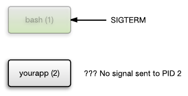

容器最佳实践
在 2019-07-25 Thursday 发布于 DevOps 分类 • 5 min read
概述¶
学习制作镜像的最佳实践。
这篇文章主要是翻译自OpenShift关于镜像的最佳实践, 同时结合我看到的其他关于镜像最佳实践的文章, 以及我日常工作中的体会总结出来的. 包括通用的容器最佳实践, java, nginx, python容器最佳实践以及OpenShift上容器最佳实践. 最佳实践的目的一方面是为了提升DevOps效率, 另一方面是为了提高安全性. 希望对各位有所帮助.
在创建要在Docker, Kubernetes, 或者Openshift容器平台上运行的容器镜像时，作为一名镜像作者和维护者，需要考虑许多最佳实践，以确保为这些镜像的使用者提供良好的体验。因为镜像是不可变的并按原样使用，下面的指导原则有助于确保您的镜像是高度可复用的，并且易于在Docker, Kubernetes 或 Openshift容器平台上使用。
翻译对照表¶
| 英文 | 中文 | 说明 |
|---|---|---|
| tag | 标签 | docker镜像版本标签 |
| image | 镜像 | |
| container | 容器 | |
| pod | Kubernetes的最小托管单位, 一般为一个容器, 也可以为多个容器. | |
| namespace | 命名空间 | |
| image layer | 镜像层 | |
| metadata | 元数据 | |
| node | 节点 | Kubernetes 概念, 指主机. |
| OpenShift Container Platform | OpenShift容器平台 | |
| SOURCE-TO-IMAGE | 源到镜像 | OpenShift容器平台的专有CI/CD方式 |
| root group | 根组 | *NIX的概念 |
| service account | 服务帐户 | Kubernetes或 OpenShift的概念 |
| security context constraint | 安全上下文约束 | OpenShift容器平台的概念 |
| service | 服务 | Kubernetes 概念 |
| image registry | 镜像注册表 | |
| heap | 堆 | 一种JVM内存类型 |
| out-of-memory | 内存不足 | JVM报错 |
| liveness probe | 活性探针 | Kubernetes 概念 - 用于检查容器状态 |
| readiness probe | 就绪探针 | Kubernetes 概念 - 用于检查容器状态 |
| template | 模板 | |
| label | 标签 | dockerfile概念 |
| quota | 配额 |
通用容器镜像指南¶
通常，在创建容器镜像时，以下准则普遍适用，并且与是否在OpenShift Container Platform上使用镜像无关。
使用 LABEL maintainer¶
LABEL maintainer指令设置镜像的author字段。如果您的用户有问题，这对于向他们提供电子邮件联系非常有用。
复用镜像¶
只要有可能，我们建议您使用FROM语句将镜像基于适当的上游镜像。这可确保您的镜像在更新时可以轻松从上游映像中获取安全修复程序，而不必直接更新依赖项。
此外，在FROM指令中使用标签 tag（例如 rhel:rhel7），使用户能够清楚地了解镜像所基于的上游镜像版本。
 禁止使用
禁止使用latest tag以确保您的镜像不会受到latest上游镜像版本的重大更改的影响。
保持标签 TAGS 的兼容性¶
给自己的镜像打标签时，我们建议您尝试在标签内保持向后兼容性。例如，如果您提供一个名为foo的镜像，并且它当前为1.0版，那么您可以提供一个foo:v1标签。当您更新镜像时，只要它继续与原始镜像兼容，就可以继续标记新图像为foo:v1，并且该标记的下游消费者将能够在不中断的情况下获得更新。
如果您稍后发布了不兼容的更新，那么您应该切换到一个新标签，例如foo:v2。这允许下游消费者可以按照自身意愿升级到新版本，但不会被新的不兼容镜像无意中破坏。但是任何使用foo:latest的下游消费者都会承担引入不兼容更改的风险。
避免多个进程¶
我们建议您不要在一个容器内启动多个服务，例如数据库和sshd。这是不必要的，因为容器是轻量级的，可以很容易地链接在一起以协调多个进程。Kubernetes和Openshift容器平台允许您通过将相关镜像分组到单个pod中，轻松地对它们进行集中和共同管理。
这个托管单位(指pod)确保单位内的容器间共享网络名称空间和通信存储。更新的干扰也较小。单进程的信号处理流程也更清晰，因为您不必管理路由信号到生成的进程。
在封装脚本中使用 EXEC 指令¶
许多镜像在为正在运行的软件启动进程之前使用封装脚本进行一些设置。如果您的镜像使用这样的脚本，那么该脚本应该使用exec，以便用软件替换该脚本的进程。如果不使用exec，那么容器运行时发送的信号将转到封装脚本，而不是软件的进程。这不是你想要的，如图所示：

假设您有一个封装脚本来启动某个服务器的进程。启动容器（例如，使用docker run -i），它运行封装脚本，然后启动进程。现在假设您希望使用ctrl+c终止容器。如果封装脚本使用exec启动服务器进程，docker将向服务器进程发送sigint，并且一切都将按预期工作。如果您没有在封装脚本中使用exec，docker会将sigint发送到封装脚本的进程，并且您的服务器进程将像什么都没有发生一样继续运行。
还要注意，当在容器中运行时，您的进程作为pid 1运行。这意味着，如果主进程终止，整个容器将停止，从而杀死您可能从PID 1进程启动的任何子进程。
有关其他含义，请参阅 “Docker和PID 1 zombie收获问题”博客文章。另请参阅“揭开init系统（PID 1）的神秘面纱”博客文章，深入了解PID 1和init 系统。
清除临时文件¶
应删除在生成过程中创建的所有临时文件。这还包括使用ADD指令添加的任何文件。例如，👍 我们强烈建议您在执行yum install操作之后运行yum clean命令。
通过如下创建RUN语句，可以防止yum缓存存储在镜像层中：
RUN yum -y install mypackage && yum -y install myotherpackage && yum clean all -y
请注意，如果您改为：
RUN yum -y install mypackage
RUN yum -y install myotherpackage && yum clean all -y
那么，第一个yum调用会在该层中留下额外的文件，并且在稍后运行yum clean操作时，无法删除这些文件。额外的文件在最终镜像中不可见，但它们存在于底层中。
当前容器生成过程不允许在较新的层中运行命令，以缩小在较早的层中删除某些内容时图像所使用的空间。这意味着，如果在后面的层中执行rm命令，尽管文件是隐藏的，但它不会减少要下载的镜像的总体大小。因此，与yum clean示例一样，最好在可能的情况下，使用创建文件的相同命令删除文件，这样它们就不会被写入某个层。
此外，在一条RUN语句中执行多个命令可以减少镜像中的层数，从而缩短下载和提取时间。
apt-get例子如下: (最后通过rm -rf /var/lib/apt/lists/*删除)
RUN apt-get update && apt-get install -y \
aufs-tools \
automake \
build-essential \
curl \
dpkg-sig \
libcap-dev \
libsqlite3-dev \
mercurial \
reprepro \
ruby1.9.1 \
ruby1.9.1-dev \
s3cmd=1.1.* \
&& rm -rf /var/lib/apt/lists/*
备注:
RUN、COPY和ADD步骤将创建层。- 每个层包含与前一层的差异项。
- 图层会增加最终镜像的大小。
- 将相关命令（
yum install）放入同一RUN步骤。- 在同一
RUN步骤中删除创建的文件。- 避免使用
apt-get upgrade或yum upgrade all，因为它将所有包升级到最新版本.
按正确的顺序放置指令¶
容器构建器读取dockerfile并从上到下运行指令。成功执行的每一条指令都会创建一个层，在下次构建此镜像或另一个镜像时可以重用该层。在Dockerfile的顶部放置很少更改的指令非常重要。这样做可以确保同一图像的下一个构建速度非常快，因为上层更改不会使缓存失效。
例如，如果您正在处理一个dockerfile，其中包含一个用于安装正在迭代的文件的ADD指令，以及一个用于yum install包的RUN指令，那么最好将ADD命令放在最后：
FROM foo
RUN yum -y install mypackage && yum clean all -y
ADD myfile /test/myfile
这样，每次编辑myfile并重新运行`docker build时，系统都会为yum命令重用缓存层，并且只为ADD操作生成新层。
如果相反，您将dockerfile编写为：
FROM foo
ADD myfile /test/myfile
RUN yum -y install mypackage && yum clean all -y
然后，每次更改myfile和再次运行docker build时，ADD操作都会使运行层缓存失效，因此必须重新运行yum操作。
标记重要端口¶
EXPOSE指令使容器中的端口对主机系统和其他容器可用。虽然可以指定使用docker run -p调用公开端口，但在dockerfile中使用EXPOSE指令可以通过显式声明软件需要运行的端口，使人和软件更容易使用您的镜像：
- 暴露的端口将显示在与从您的镜像创建的容器相关联的
docker ps下。 docker inspect返回的镜像的元数据中也将存在暴露的端口。- 当您将一个容器链接到另一个容器时，暴露的端口将被链接。
设置环境变量¶
 使用
使用ENV指令设置环境变量是很好的实践。一个例子是设置项目的版本。这使得人们在不查看dockerfile的情况下很容易找到版本。另一个例子是在系统上公布一条可以被另一个进程使用的路径，比如JAVA_HOME.
避免默认密码¶
最好避免设置默认密码。许多人会扩展镜像，忘记删除或更改默认密码。如果为生产中的用户分配了一个众所周知的密码，这可能会导致安全问题。 应该使用环境变量来配置密码。
如果确实选择设置默认密码，请确保在容器启动时显示适当的警告消息。消息应该通知用户默认密码的值，并解释如何更改它，例如设置什么环境变量。
禁用SSHD¶
禁止在镜像中运行sshd。可以使用docker exec命令访问本地主机上运行的容器。或者，可以使用oc exec命令或oc rsh命令来访问在Openshift容器平台集群上运行的容器。在您的镜像中安装和运行sshd会遭受潜在攻击, 需要额外的安全补丁修复。
将 VOLUMES 用于持久数据¶
镜像应使用卷来存储持久数据。这样，Kubernetes或OpenShift Container Platform将网络存储挂载到运行容器的节点，如果容器移动到新节点，则存储将重新连接到该节点。通过将卷用于所有持久存储需求，即使重新启动或移动容器，也会保留内容。如果您的镜像将数据写入容器内的任意位置，则可能不会保留该内容。
所有需要保存的数据，即使在容器被销毁后，也必须写入卷。容器引擎支持容器的readonly标志，可用于严格执行有关不将数据写入容器中的临时存储的良好实践。现在围绕这个功能设计您的镜像将使以后更容易利用它。
此外，在Dockerfile中显式定义卷使镜像的消费者很容易理解在运行镜像时必须定义哪些卷。
有关如何在Openshift容器平台中使用卷的更多信息，请参阅 Kubernetes documentation.
注意:
即使使用持久卷，镜像的每个实例都有自己的卷，并且文件系统在实例之间不共享。这意味着卷不能用于共享集群中的状态。
使用非root用户运行容器进程¶
默认情况下，Docker用容器内部的root运行容器进程。这是一个糟糕的做法，因为如果攻击者设法突破容器，他们可以获得对Docker主机的root权限。
如果您是容器中的root，那么您将是主机上的root。
使用多阶段构建创建精益且生产就绪的镜像¶
利用多阶段构建来创建一个用于构建工件的临时镜像，该工件将被复制到生产镜像上。临时构建镜像将与与该映像关联的原始文件、文件夹和依赖项一起丢弃。
这会产生了一个精益，生产就绪的镜像。
一个用例是使用非Alpine基础镜像来安装需要编译的依赖项。然后可以将wheel文件复制到最终镜像。
Python 示例如下:
FROM python:3.6 as base
COPY requirements.txt /
RUN pip wheel --no-cache-dir --no-deps --wheel-dir /wheels -r requirements.txt
FROM python:3.6-alpine
COPY --from=base /wheels /wheels
COPY --from=base requirements.txt .
RUN pip install --no-cache /wheels/* # flask, gunicorn, pycrypto
WORKDIR /app
COPY . /app
使用前大小: 705MB, 使用后大小: 103MB
禁止在容器中存储机密信息¶
禁止在容器中存储机密信息, 包括:
- 敏感信息。
- 数据库凭据、
- ssh密钥、
- 用户名和密码、
- api令牌等。
以上信息可以通过:
- 环境变量 ENV 传递
- 卷VOLUME 挂载
避免将文件放入/tmp中¶
对于一些软件(如: python的gunicorn), 会将某些缓存信息或心跳检测信息写入/tmp中, 这对/tmp的读写性能有较高要求, 如果/tmp挂载的是普通磁盘, 可能导致严重的性能问题.
在某些Linux发行版中，/tmp通过tmpfs文件系统存储在内存中。但是，Docker容器默认情况下没有/tmp打开tmpfs：
$ docker run --rm -it ubuntu:18.04 df
Filesystem 1K-blocks Used Available Use% Mounted on
overlay 31263648 25656756 3995732 87% /
tmpfs 65536 0 65536 0% /dev
tmpfs 4026608 0 4026608 0% /sys/fs/cgroup
/dev/mapper/root 31263648 25656756 3995732 87% /etc/hosts
shm 65536 0 65536 0% /dev/shm
如您所见，/tmp正在使用标准的Docker overlay文件系统：它由普通的块设备或计算机正在使用的硬盘驱动器支持。这可能导致性能问题 .
针对这类软件, 通用的解决方案是将其临时文件存储在其他地方。特别是，如果你看上面你会看到/dev/shm使用shm文件系统共享内存和内存文件系统。所以你需要做的就是使用/dev/shm而不是/tmp
~~使用 Alpine Linux基础镜像(不建议采纳)~~¶
使用基于Alpine Linux的镜像，因为它们只提供您需要的包。生成的图像将更小。
收益有:
- 减少了主机成本，因为使用的磁盘空间更少
- 更快的构建、下载和运行时间
- 更安全（因为包和库更少）
- 更快的部署
示例如下:
FROM python:3.6-alpine
WORKDIR /app
COPY requirements.txt /
RUN pip install -r /requirements.txt # flask and gunicorn
COPY . /app
使用前大小: 702MB, 使用后大小: 102MB
使用Red Hat 官方基础镜像¶
上边一条其实我觉得这是不好的建议。我已经看到了使用Alpine Linux的人们报告的一大堆问题，因为它建立在musl libc之上，而不是大多数Linux发行版使用的GNU libc（glibc）。问题范围从日期时间格式的错误到由于较小的堆栈导致的崩溃。
公平地说，许多或大部分问题已得到解决，但是在生产中调试自己的错误已经足够糟糕了，为什么要增加更多的潜力以获得更小的图像呢？
因此，我建议使用基于RedHat官方的镜像。
使用.dockerignore排除无关文件¶
要排除与构建无关的文件（不重构源存储库），请使用.dockerignore文件。此文件支持与.gitignore文件类似的排除模式。具体请参阅 .dockerignore文件。
不要安装不必要的包¶
为了降低复杂性，依赖性，文件大小和构建时间，请避免安装额外的或不必要的软件包，因为它们可能“很好”。例如，您不需要在数据库映像中包含文本编辑器。
解耦应用程序¶
每个容器应该只有一个进程。将应用程序分离到多个容器中可以更容易地水平扩展和重用容器。例如，Web应用程序堆栈可能包含三个独立的容器，每个容器都有自己独特的映像，以分离的方式管理Web应用程序，数据库和内存缓存。
将每个容器限制为一个进程是一个很好的经验法则，但它不是一个硬性规则。例如，不仅可以使用init进程生成容器 ，而且某些程序可能会自行生成其他进程。例如，Celery可以生成多个工作进程，Apache可以为每个请求创建一个进程。
使用您的最佳判断，尽可能保持容器清洁和模块化。如果容器彼此依赖，则可以使用Docker容器网络 来确保这些容器可以进行通信。
对多行参数进行排序¶
只要有可能，通过按字母顺序排序多行参数来缓解以后的更改。这有助于避免重复包并使列表更容易更新。这也使PR更容易阅读和审查。在反斜杠（\）之前添加空格也有帮助。
下面是来自一个示例buildpack-deps图像：
RUN apt-get update && apt-get install -y \
bzr \
cvs \
git \
mercurial \
subversion
JAVA 容器镜像指南¶
IDE插件推荐¶
- idea - 转到“首选项”、“插件”、“安装JetBrains插件…”，搜索“Docker”并单击“安装”
- Eclipse -
设置内存限制相关参数¶
指定
-Xmx=1g将告诉JVM分配一个1GB堆。它并没有告诉JVM将其整个内存使用量限制为1GB。还会有卡card tables、代码缓存code cache和各种其他堆外数据结构。用于指定总内存使用量的参数是-XX:MaxRAM。请注意，使用-XX:MaxRam=500m时，堆将大约为250MB。
Jvm在历史上查找/proc以确定有多少可用内存，然后根据该值设置其堆大小。不幸的是，像docker这样的容器在/proc中不提供特定于容器的信息。红帽2017年已经提出了一个补丁，它已经被上游接受，提供了一个-XX:+UseCGroupMemoryLimitForHeap命令行参数，它告诉jvm查找/sys/fs/cgroup/memory/memory.limit_in_bytes，以确定有多少可用内存。如果这个补丁在运行的OpenJDK版本中不可用，可以通过显式设置-XX:MaxRAM=n来模拟它。
总结, 设置内存限制相关参数:
- openjdk 8 新版本, 添加:
-XX:+UseCGroupMemoryLimitForHeap - 如果没有上边的参数, 设置:
-XX:MaxRAM=n - 建议设置JVM Heap约为 memory limit的80%
- 建议设置JVM MaxRAM接近memory limit
设置GC策略¶
OpenJDK8中有一个补丁，它将使用cgroup可用的信息来计算适当数量的并行GC线程。但是，如果这个补丁在您的OpenJDK版本中不可用，那么您最终可能会得到8个并行GC线程，并且容器中只有2个CPU。解决方法是显式指定并行GC线程的数量。-XX:ParallelGCThreads=2 。~~如果您的容器中限定只有一个CPU，我强烈建议您使用-XX:+UseSerialGC运行，并完全避免并行GC。~~
JAVA启动阶段调优¶
JAVA程序都有一个启动阶段，它需要大量的堆，但会进入一个安静的循环阶段，在这个阶段它不需要太多。
对于串行GC策略, 你可以要求它更具侵略性. -XX:MinHeapFreeRatio=20(当堆占用率大于80%时，此值默认增大。)
XX:MaxHeapFreeRatio=40(堆占用率小于60%时收缩)
对于并行 - parallel GC策略, 推荐如下配置:
-XX:GCTimeRatio=4 -XX:AdaptiveSizePolicyWeight=90
JAVA容器全局建议资源请求和资源限制¶
JAVA程序都有一个启动阶段，启动阶段也会大量消耗CPU, CPU使用越多, 启动阶段越短.
下面是一个表，总结了不同CPU限制下的spring boot 示例应用启动时间(在millicore中):
- 500m — 80 seconds
- 1000m — 35 seconds
- 1500m — 22 seconds
- 2500m — 17 seconds
- 3000m — 12 seconds
根据以上情况, 容器平台管理员考虑对JAVA容器做如下限制:
- 使用CPU requests, 不设置cpu limit (Kubernetes功能)
- 使用memory limit等于memory request
resources:
requests:
memory: "1024Mi"
cpu: "500m"
limits:
memory: "1024Mi"
NGINX 容器镜像指南¶
如果您直接在基础硬件或虚拟机上运行NGINX，通常需要一个NGINX实例来使用所有可用的CPU。由于NGINX是多进程模式，通常你会启动多个worker processes，每个工作进程都是不同的进程，以便利用所有CPU。
但是，在容器中运行时，通常会在通过运行更多容器来扩展的环境中。Kubernetes：所有这些都隐藏了硬件，并期望通过缩放多个容器来利用多个CPU。
因此，建议只需一个或两个工作进程即可开始使用NGINX。
worker_processes 1; # 或auto或2
Python 容器镜像指南¶
示例如下:
# pull official base image
FROM python:3.7-alpine
# set work directory
WORKDIR /app
# set environment variables
ENV PYTHONDONTWRITEBYTECODE 1
ENV PYTHONUNBUFFERED 1
ENV DEBUG 0
# install psycopg2
RUN apk update \
&& apk add --virtual build-deps gcc python3-dev musl-dev \
&& apk add postgresql-dev \
&& pip install psycopg2 \
&& apk del build-deps
# install dependencies
COPY ./requirements.txt .
RUN pip install -r requirements.txt
# copy project
COPY . .
# add and run as non-root user
RUN adduser -D myuser
USER myuser
# run gunicorn
CMD gunicorn hello_django.wsgi:application --bind 0.0.0.0:$PORT
△ 示例Dockerfile
IDE插件推荐¶
- PyCharm - 同Idea
- VSCode - Visual Studio Code Remote - Containers 插件
建议配置的环境变量¶
# set environment variables
ENV PYTHONDONTWRITEBYTECODE 1
ENV PYTHONUNBUFFERED 1
ENV DEBUG 0
PYTHONDONTWRITEBYTECODE: 防止python将pyc文件写入硬盘PYTHONUNBUFFERED: 防止python缓冲stdout和stderrDEBUG: 方便根据环境类型的不同(测试/生产)调整是否开启debug
安装数据库驱动包的方法¶
以postgredb的驱动psycopg2为例:
# install psycopg2
RUN apk update \
&& apk add --virtual build-deps gcc python3-dev musl-dev \
&& apk add postgresql-dev \
&& pip install psycopg2 \
&& apk del build-deps
Openshift 容器平台特定指南¶
以下是创建专门用于Openshift容器平台的容器镜像时适用的准则。
启用源到映像（S2I）功能¶
对于打算运行由第三方提供的应用程序代码的镜像，例如为运行开发人员提供的java代码而设计的java镜像，您可以使您的镜像与源到映像（S2I）构建工具一起工作。
S2I 是一个框架，它使得编写以应用程序源代码为输入的镜像和生成以运行组合应用程序为输出的新镜像变得容易。
例如，这个python镜像定义了用于构建各种版本的python应用程序的s2i脚本。
支持任意用户ID¶
默认情况下，openshift容器平台使用任意分配的用户ID运行容器。这提供了额外的安全性，防止因容器引擎漏洞而逃逸容器的进程，从而在主机节点上获取更高级的权限。
对于支持以任意用户身份运行的镜像，可以由镜像中的进程写入的目录和文件应归根组所有，并由该组读/写。要执行的文件还应具有组执行权限。
将以下内容添加到Dockerfile将设置目录和文件权限，以允许根组中的用户在生成的镜像中访问它们：
RUN chgrp -R 0 /some/directory && \
chmod -R g=u /some/directory
因为容器用户始终是根组的成员，所以容器用户可以读写这些文件。根组没有任何特殊权限（与根用户不同），因此这种安排不存在安全问题。此外，在容器中运行的进程不能监听特权端口（低于1024的端口），因为它们不是作为特权用户运行的。
因为容器的用户ID是动态生成的，所以在/etc/passwd中不会有关联的条目。这可能会给希望能够查找其用户ID的应用程序带来问题。解决此问题的一种方法是使用容器的用户ID动态创建一个passwd文件条目，作为镜像的启动脚本的一部分。这就是Dockerfile可能包含的内容：
RUN chmod g=u /etc/passwd
ENTRYPOINT [ "uid_entrypoint" ]
USER 1001
其中uid_entrypoint包含：
if ! whoami &> /dev/null; then
if [ -w /etc/passwd ]; then
echo "${USER_NAME:-default}:x:$(id -u):0:${USER_NAME:-default} user:${HOME}:/sbin/nologin" >> /etc/passwd
fi
fi
有关此的完整示例，请参见此dockerfile。
最后，dockerfile中的最终USER声明应该指定用户ID（数值），而不是用户名。这允许openshift容器平台验证镜像试图使用的权限，并阻止运行试图作为root运行的镜像，因为作为特权用户运行容器会暴露潜在的安全漏洞。如果镜像未指定用户，则它从父映像继承USER。
如果您的S2I镜像不包含带有数字用户的
USER声明，则默认情况下，构建将失败。为了允许使用命名用户或root（0）用户在Openshift容器平台中构建映像，可以添加项目的builder服务帐户（system:serviceaccount:<your-project>:builder）添加到特权安全上下文约束（scc）。或者，您可以允许所有镜像作为任何用户运行。
使用服务 SERVICE 进行镜像间通信¶
对于您的镜像需要与另一个镜像提供的服务通信的情况，例如需要访问数据库镜像以存储和检索数据的Web前端镜像，您的镜像应该使用Openshift容器平台的服务 - service。服务 - service为访问提供一个静态端点，该端点不会随着容器的停止、启动或移动而更改。此外，服务还为请求提供负载平衡。
提供公共库¶
对于打算运行由第三方提供的应用程序代码的镜像，请确保您的镜像包含平台的常用库。特别是，为与平台一起使用的公共数据库提供数据库驱动程序。例如，如果您正在创建Java框架镜像，则为MySQL和PostgreSQL提供JDBC驱动程序。这样做可以防止在应用程序装配期间下载公共依赖项，从而加快应用程序镜像的构建。它还简化了应用程序开发人员所需的工作，以确保满足其所有依赖项。
使用环境变量进行配置¶
您的镜像的用户应该能够配置它，而不必根据您的镜像创建下游镜像。这意味着运行时配置应该使用环境变量来处理。对于一个简单的配置，正在运行的进程可以直接使用环境变量。对于更复杂的配置或不支持此配置的运行时，通过定义在启动期间处理的模板配置文件来配置运行时。在此处理过程中，可以将使用环境变量提供的值替换到配置文件中，或者用于决定在配置文件中设置哪些选项。
另外建议使用环境变量将证书和密钥等机密信息传递到容器中。这样可以确保机密值不会最终提交到镜像中并泄漏到容器镜像注册表中。
提供环境变量允许镜像的使用者自定义行为，如数据库设置、密码和性能调整，而不必在镜像上引入新的层。相反，它们可以在定义POD时简单地定义环境变量值，并在不重建镜像的情况下更改这些设置。
对于非常复杂的场景，也可以使用运行时挂载到容器中的卷来提供配置。但是，如果您选择这样做，则必须确保当不存在所需的卷或配置时，镜像在启动时提供清晰的错误消息。
此主题与在使用服务 SERVICE 进行镜像间通信相关，例如，应根据提供服务 - service 端点信息的环境变量定义数据源。这允许应用程序在不修改应用程序镜像的情况下动态使用Openshift容器平台环境中定义的数据源服务 - service。
此外，应该通过检查容器的cgroups设置来进行相应调整。这允许镜像将自己调到可用内存、CPU和其他资源。例如，基于Java的镜像应该根据cgroup最大内存参数来调整它们的堆 - heap，以确保它们不超过限制并获得内存不足out-of-memory的错误。
有关如何管理容器中的cgroup配额的详细信息，请参阅以下参考：
- Blog article - Resource management in Docker
- Docker documentation - Runtime Metrics
- Blog article - Memory inside Linux containers
考虑集群方案¶
您必须完全理解运行镜像的多个实例意味着什么。在最简单的情况下，服务的负载平衡功能处理将流量路由到镜像的所有实例。但是，许多框架必须共享信息才能执行领导人选举或故障转移状态；例如，在会话复制中。
考虑在Openshift容器平台中运行时，您的实例如何完成此通信。虽然pod可以直接相互通信，但只要pod启动、停止或移动，它们的IP地址就会发生变化。因此，集群方案必须是动态的。
记录日志¶
最好将所有日志发送到标准输出。Openshift容器平台从容器中收集标准输出，并将其发送到集中日志记录服务(ELK技术栈)，在那里可以查看。如果必须分隔日志内容，请在输出前面加上适当的关键字，这样可以筛选消息。
如果您的镜像记录日志到一个文件中，那么用户必须使用手动操作来输入正在运行的容器并检索或查看日志文件。
LIVENESS活性探针和READINESS 就绪探针¶
记录可用于镜像的活性和就绪探针示例。这些探针将允许用户部署您的镜像，并确保在未就绪之前不会将流量路由到容器，并且如果进程进入不健康状态，将重新启动容器。
模板 - TEMPLATE¶
考虑为镜像提供一个示例模板。模板将为用户提供一种简单的方法，使您可以使用有用的配置快速部署图像。为了完整性，您的模板应该包括您用镜像记录的活性和就绪探针。
额外资源:
在镜像中包括元数据¶
定义镜像元数据有助于Openshift容器平台更好地使用容器镜像，允许Openshift容器平台为使用您的镜像的开发人员创建更好的体验。例如，您可以添加元数据来提供镜像的有用描述，或者对其他可能需要的镜像提供建议。
您可以使用dockerfile中的label指令来定义镜像元数据。标签 - label类似于环境变量，因为它们是附加到镜像或容器的键值对。标签不同于环境变量，因为它们对正在运行的应用程序不可见，但是可以用于快速查找镜像和容器。
标签名称通常应具有名称空间。应相应地设置名称空间，以反映将要拾取标签并使用它们的项目。对于openshift容器平台，命名空间应设置为io.openshift，对于kubernetes，命名空间为io.k8s。
有关格式的详细信息，请参阅Docker自定义元数据文档。
| Variable | Description |
|---|---|
io.openshift.tags |
此标签 - label包含以逗号分隔字符串值列表表示的标签 - tag列表。标签 - tag是将容器镜像分类为广泛功能区域的方法。标签帮助用户界面和生成工具在应用程序创建过程中建议相关的容器图像。LABEL io.openshift.tags mongodb,mongodb24,nosql |
io.openshift.wants |
指定生成工具和用户界面可能用于提供相关建议的标签列表，需要具有给定标记的容器镜像。例如，如果容器镜像需要mysql和redis，而您没有带有redis标签的容器镜像，那么UI可能建议您将此镜像添加到部署中。LABEL io.openshift.wants mongodb,redis |
io.k8s.description |
此标签可用于向容器镜像使用者提供有关此镜像提供的服务或功能的更详细信息。然后，UI可以将此描述与容器镜像名称一起使用，以向最终用户提供更人性化的信息。LABEL io.k8s.description The MySQL 5.5 Server with master-slave replication support |
io.openshift.non-scalable |
镜像可能使用此变量来表示它不支持缩放。然后，用户界面将此信息传达给该图像的消费者。不可伸缩基本上意味着副本的值最初不应设置为大于1。LABEL io.openshift.non-scalable true |
io.openshift.min-memory 和io.openshift.min-cpu |
此标签建议容器镜像可能需要多少资源才能正常工作。用户界面可能会警告用户部署此容器映像可能会超出其用户配额。这些值必须与kubernetes数量兼容。LABEL io.openshift.min-memory 8Gi LABEL io.openshift.min-cpu 4 |
△ OpenShift 容器平台支持的元数据
参考链接¶
- OpenShift Container Platform Docs - Creating images
- Docker documentation - Best practices for writing Dockerfiles
- Project Atomic documentation - Guidance for Container Image Authors
- “Docker和PID 1 zombie reaping问题”
- “揭开init系统（PID 1）的神秘面纱”
- GITHUB - sclorg/s2i-python-container
- Blog article - Resource management in Docker
- Docker documentation - Runtime Metrics
- Blog article - Memory inside Linux containers
- Docker documentation - Docker basics
- Docker documentation - Dockerfile reference
- Docker documentation - 自定义元数据。
- testdriven.io - Deploying Django to Heroku With Docker
- testdriven.io - Dockerizing Django with Postgres, Gunicorn, and Nginx
- dockercon-2018 - Docker for Python Developers
- Docker documentation - 多阶段构建
- Red Hat Developer - OpenJDK and Containers
- Java Application Optimization on Kubernetes on the Example of a Spring Boot Microservice
- Python Speed - Faster Docker builds with pipenv, poetry, or pip-tools
- Python Speed - Configuring Gunicorn for Docker
- Docker documentation - Docker and Eclipse
- Docker documentation - Docker and IntelliJ IDEA
- Developing inside a Container